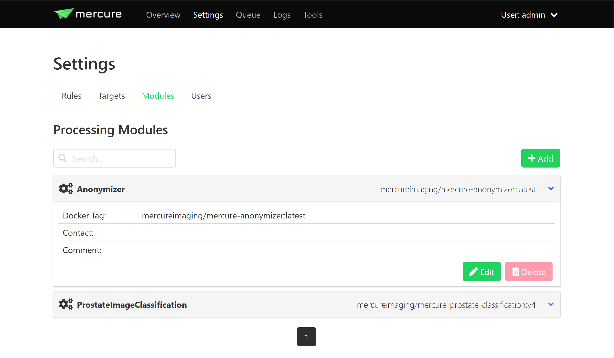
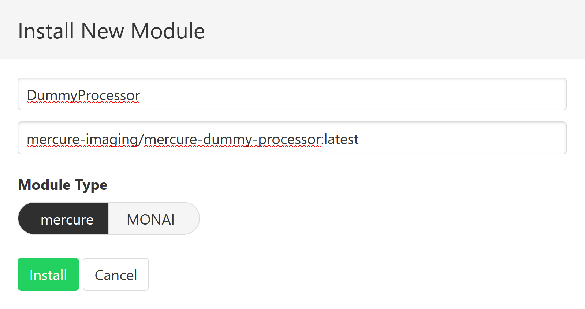
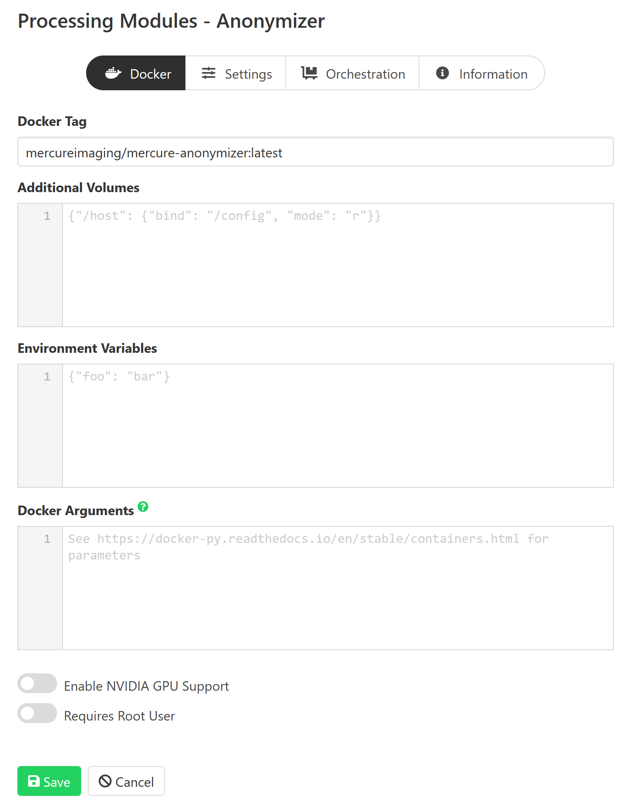

Modules
An overview of the installed processing modules can be seen on the “Settings > Modules” page. Details are shown by clicking on an item, which also allows editing the module settings.
{kind=link}
To setup a new processing module, click the “Add” button. Select a unique name for the module and specify the processing module by entering the Docker tag. It is possible to install the same processing module multiple times under different names with different settings.
The default module type “mercure” is the correct type for modules designed to be used in mercure. Modules that are compatible with the MONAI deployment format (aka MONAI Application Packages, MAPs) must be installed with this type specified. If you select the wrong type here, you can change it later.
{kind=link}
Note
The Docker Tag corresponds to the name of the processing module as stored on Docker Hub (example: mercureimaging/mercure-testmodule). For modules that are not distributed via Docker Hub (or comparable container registry), the Docker container needs to be built locally on the server before it can be used by mercure.
Afterwards, you can edit additional Docker-specific settings on the “Docker” tab (additional volumes, environment variables, etc.). In most cases, these settings are not needed.
For modules that utilize a GPU, click the “Enable NVIDIA GPU Support” switch. This will automatically add the necessary settings to the Docker configuration. It is required that the NVIDIA drivers are installed on the server and that the module has been built with GPU support.
mercure runs executables inside Docker containers with restricted privileges. However, some modules require root privileges, including all MONAI modules (MAPs). To enable it, select the “Requires Root User” option. For security reasons, this should only be used if necessary.
{kind=link}
Settings for the processing module can be defined on the “Settings” tab. These settings must be entered in JSON format. The settings entered on the module page are global modules settings, i.e. they are applied whenever the module is used. The global module settings can be overwritten (or extended) by defining settings for the individual rule (thus, the settings passed to the module are the global module settings merged with the rule-specific processing settings).
The “Orchestration” tab allows configuring Nomad-specific settings. If you have a systemd- or Docker-type installation, these settings are irrelevant and can be ignored. It is possible to specify “Execution constraints” if the module should be executed on a certain node of your processing cluster (e.g., if a specific GPU or operating system is needed). The field “Resource requirements” can be used to request resources needed for execution of the module (e.g., the amount of memory or CPU cores).
The “Information” tab can be used to document the current module setup, including a free-text description as well as contact e-mail address.